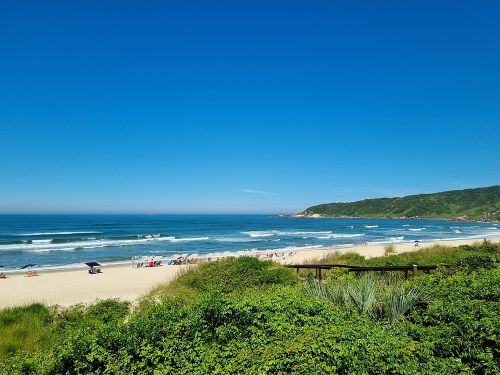
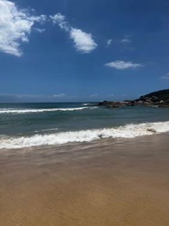
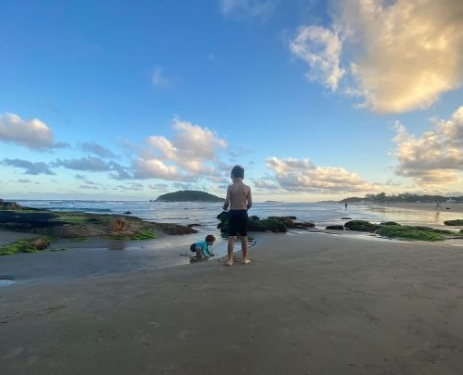

Minha cidade favorita é Imbituba, fica em Santa Catarina, estado da região do Sul do Brasil.
Amo a beleza natural da cidade, principalmente as praias de Barra de Ibiraquera e Praia do Rosa!

Minha família ama tirar férias nestas praias! As duas têm lagoas de águas mornas, e um mar azul, cristalino e perolado!

É possível ver peixinhos nadando nas ondas que quebram perto da lagoa da Barra de Ibiraquera...
E as piscinas naturais agradam as crianças que amam brincar no mar raso!

São lugares que agradam tanto quem gosta de sossego... quanto quem curte um surf com as melhores ondas do Sul do Brasil!
Com certeza, foram lugares "pintados à mão" por Deus!